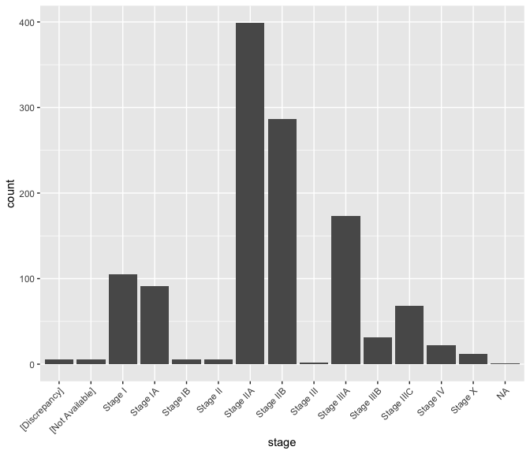

Exploratory data analysis of breast cancer transcriptomes
M Hallett
21/07/2020
Plan for Today
A few minutes about pipes in R (the \({\tt magrittr}\) package, also a part of \({\tt R}\)’s \({\tt tidyverse}\)).
Further explore our breast cancer transcriptome dataset. Our focus today is on the model in the Data Science cycle.
Here we focus more on the gene expression (rather than clinico-pathlogical sample data).
This will complete Part I of the textbook.
Today’s material marks the end of material covered by the first midterm.

Pipes
Pipes simplify R. They are a bit tricky at first.
The \({\tt tidyverse}\) incorporates the \({\tt magrittr}\) package. So when you load the \({\tt tidyverse}\) library, you have access to pipes.
To be honest, I think many new programmers can get confused by pipes so I would normally not teach them this early. However, the book and examples online do use pipes. So I guess we have to go with the flow.
Functions and composition
- Suppose I wanted to compute a function \(f(x) = \log{ \left( \sqrt{ e^{tanh( x)} } \right) }\). I have no idea why you would want to compute this but …
Approach 1 [Level Newbie]
Approach 2 [Level Junior]
Functions and composition
Approach 3 [Level Padawan] (composition of functions)
Approach 4 [Level Jedi Warrior] (Pipes)
Here \(x\) is transformed by a succession of functions. By default the left-hand side (LHS) will be piped in as the first argument of the function appearing on the right-hand side (RHS).
If it’s not the first argument, you can use “.” as a placeholder.
10 %>% seq(1, ., 2); 3 %>% seq(1, 10, .)
## [1] 1 3 5 7 9
## [1] 1 4 7 10
5 %>% seq( from = 1, by = 1) # fills in the missing parameter
## [1] 1 2 3 4 5Pipes - return to our example last class (L05)
b0 <- rename(small_brca, stage = ajcc_pathologic_tumor_stage )
b1 <- filter(b0, (grepl("Stage", stage) & !grepl("Stage X", stage) & tumor==TRUE))
b2 <- select(b1, participant, stage, vital_status, death_days_to)
b3 <- filter(b2, vital_status=="Dead")
b4 <- mutate(b3, death_yrs = as.numeric(death_days_to) / 365)small_brca %>%
rename(stage = ajcc_pathologic_tumor_stage ) %>%
filter((grepl("Stage", stage) & !grepl("Stage X", stage) & tumor==TRUE)) %>%
select(participant, stage, vital_status, death_days_to) %>%
filter(vital_status=="Dead") %>%
mutate(death_yrs = as.numeric(death_days_to) / 365) -> b4Starting in Chapter 5 of the textbook, you see a lot of examples using \({\tt %>%}\).
Returning to our breast cancer transcriptome
We’ve learnt how to winnow our dataset down to the core that we want through \({\tt dplyr}\).
And we’ve learnt how to visualize that data to discover trends through \({\tt ggplot}\).
Now we focus on the types of questions we can ask, how to model our data (to answer these questions), and then to refine our data and visualizations (cyclic).
Modelling is a very big topic and one could argue that the a large portion of the course explores modelling from different angles.
Some basic definitions
Previous lectures suggested that a good data scientist listens to experts to understand each of their variables (eg Why are these variables tracked in patients? What is stage? How are breast caner patients tracked? etc). Domain specific knowledge is key to data science, (no matter what any of your deep learning friends say - It’s ok for you to hang around with deep learning people but don’t let them to be a negative influence on you. No drugs, no GANs, no VAEs, no staying out too late, and be your own person. You don’t need to do or not do anything any one else says. It’s ok to be different. You have your cell phone and you know how to call a me or a taxi or 911 if they starting snorting Differential Programming again. Of course, deep learning is fun and important if you use them wisely. Just don’t fall prey to the demon weed of AI.)
But now it’s time to switch and let the data speak for itself. That’s also an important aspect of data science: use advice from the experts to help phrase the questions and check the quality of your data, but then ask new questions and objectively stand back and see what it says.
Columns correspond to variables in \({\tt tibbles}\). Variables can take on different values.
Some variables are categorical, meaning they have a (typically) small range of values. For example, \({\tt x}\) can have only an integer value \(0\), \(1\), or \(2\). For example, \({\tt tumor}\) can only have values \({\tt TRUE, FALSE}\). For example, \({\tt salsa}\) can have values \({\tt hot, medium, cold}\).
Some categorical variables are ordered. For example, \({\tt days}\) could have values \({\tt sunday, monday}, \ldots, {\tt saturday}\). Our stage variable is another example.
Some variables are continuous, meaning they have an infinite number of values and these values are ordered. For example, \({\tt temp}\) is a real number. The expression of \({\tt ESR1}\) is a continous variables, or is it?
Categorical \(\rightarrow\) Bar plot; Continuous \(\rightarrow\) Histogram
Values and variability
brca <- rename(small_brca, stage = ajcc_pathologic_tumor_stage ) # just to simplify like last class
brca <- select(brca, -c("tss", "barcode", "id", "bcr_patient_uuid", "form_completion_date", "birth_days_to"))
ggplot(data = brca) + geom_bar(mapping = aes(x = stage)) +
theme(axis.text.x = element_text(angle = 45, hjust = 1))
Explore other variables
Bar plots depict the variability of a variable. We begin with several categorical variables. In bar plot, the \(x\)-axis is simply the different value the variable can take.
We’ll use the \({\tt ggpubr}\) package which contains a function called \({\tt ggarrange()}\) to put multiple plots together in a figure.
library(ggpubr)
g_gender <- ggplot(data = brca) +
geom_bar(mapping = aes(x = gender)) +
theme(axis.text.x = element_text(angle = 45, hjust = 1))
g_menopause_status <- ggplot(data = brca) +
geom_bar(mapping = aes(x = menopause_status)) +
theme(axis.text.x = element_text(angle = 45, hjust = 1))
g_race <- ggplot(data = brca) +
geom_bar(mapping = aes(x = race)) +
theme(axis.text.x = element_text(angle = 45, hjust = 1))
g_ethnicity <- ggplot(data = brca) +
geom_bar(mapping = aes(x = ethnicity)) +
theme(axis.text.x = element_text(angle = 45, hjust = 1))Explore other variables
Explore other variables
What’s up with \({\tt histologic\_diagnosis}\)?
brca %>% group_by(histologic_diagnosis_other) %>% summarize( nn <- n())
## `summarise()` ungrouping output (override with `.groups` argument)
## # A tibble: 60 x 2
## histologic_diagnosis_other `nn <- n()`
## <chr> <int>
## 1 [Not Applicable] 1128
## 2 Adenocarcinoma with squamous differentiation, metaplastic 1
## 3 Adenoid Cystic Carcinoma 1
## 4 Apocrine 1
## 5 Cribiform 1
## 6 Ductal & Mucinous 2
## 7 ductal and lobular 2
## 8 ductal and lobular features 2
## 9 ductal and papillary 1
## 10 Ductal partially papillary 1
## # … with 50 more rowsExplore other variables
Explore the continuous gene expression data
The medical community has maintained records of clinco-pathological data for a long time. The information it provides about a tumor is perhaps limited.
Modern -omic techniques including gene expression (via RNA-sequencing) promise new deeper molecular level insight.
These are continous variables and we might use a histogram. A histogram partitions the \(x\)-axis into equal sized bins across the range of the target variable. Then the \(y\)-axis is proportional to the count (or frequency) of data points falling into that bin. You can control the number of bins.
cat("\n Min value: ", min(brca$ESR1), " Max value: ", max(brca$ESR1), " Number observations: ", nrow(brca), "\n\n"); brca$ESR1[1:50]
##
## Min value: 16 Max value: 198790 Number observations: 1215
## [1] 39073 512 66040 472 133812 359 40853 83 17928 91953
## [11] 129 25536 10121 100300 30192 2226 3915 16505 8199 46358
## [21] 672 454 2065 43274 263 65432 63025 2560 37780 167
## [31] 129540 275 56217 10257 225 62466 24713 87730 17564 1395
## [41] 25725 23137 82888 882 8946 342 578 57101 14744 40112The counts range across several orders of magnitude of difference (\(10^1 \ldots 10^5\)), suggesting the need for a transformation of the data. Gene expression data is often \(log\)-transformed.
Histogram for gene expression
g <- ggplot(data = brca, mapping=aes(x = ESR1))
g1 <- g + geom_histogram() # I think default is 30 bins
g2 <- g + geom_histogram(bins=100)
g3 <- g + geom_histogram(bins=10)
g4 <- g + geom_histogram() + coord_cartesian(ylim = c(0, 500))
ggarrange(g1, g2, g3, g4, ncol = 2, nrow = 2)
## `stat_bin()` using `bins = 30`. Pick better value with `binwidth`.
## `stat_bin()` using `bins = 30`. Pick better value with `binwidth`.Limitations of histograms
There are at least two problems with histograms.
The choice of number of bin (which determines binwidth) can greatly affect the plot, and therefore our interpretations.
Outliers can cause the histogram to be somewhat vacuous, providing little resolution of the distribution for the majority of points. (This is true in the histograms of the previous page.)
It is wise to look at the outlier values, and note their source. Which observation do they arise in? Determinig why there are outlier values is important. Is it a technical problem with that sample? Did someone enter a value incorrectly? Has a bug in your code generated a spurious value? Is it true biological variability?
If it is a technical problem or mistake, it might be correct to remove it from the study. Do you remove the whole sample? Or do you just replace the outlier value in that sample with an \({\tt NA}\)? The latter is preferable if the whole sample is not an outlier.
Hunting for outliers
exprs <- brca %>% arrange(desc(ESR1)) %>% select(participant:tumor_status, ESR1)
print(exprs, n=15)
## # A tibble: 1,215 x 7
## participant gender menopause_status race ethnicity tumor_status ESR1
## <chr> <chr> <chr> <chr> <chr> <chr> <dbl>
## 1 A1H2 FEMALE Post WHITE NOT HISPAN… TUMOR FREE 198790
## 2 A1HE FEMALE Post ASIAN NOT HISPAN… TUMOR FREE 198790
## 3 A083 FEMALE Post [Not Ava… [Not Avail… TUMOR FREE 167889
## 4 A26Z FEMALE Post ASIAN NOT HISPAN… TUMOR FREE 167889
## 5 A1R7 FEMALE Post WHITE NOT HISPAN… TUMOR FREE 167889
## 6 A0DC FEMALE Post WHITE NOT HISPAN… TUMOR FREE 160797
## 7 A3OD FEMALE Post WHITE NOT HISPAN… TUMOR FREE 160797
## 8 A1XC FEMALE Post WHITE NOT HISPAN… TUMOR FREE 160797
## 9 A12H FEMALE Pre BLACK OR… NOT HISPAN… TUMOR FREE 160797
## 10 A0TV FEMALE Post [Not Ava… [Not Avail… TUMOR FREE 154199
## 11 A1FR FEMALE Not Available WHITE NOT HISPAN… WITH TUMOR 148507
## 12 A247 FEMALE Post WHITE NOT HISPAN… TUMOR FREE 148507
## 13 A0IC FEMALE Post WHITE NOT HISPAN… [Not Availa… 148507
## 14 A156 FEMALE Post WHITE NOT HISPAN… TUMOR FREE 143338
## 15 A09K FEMALE Post [Not Ava… [Not Avail… TUMOR FREE 143338
## # … with 1,200 more rowsThere are some repeated numbers; this is suspicious to me but not enough to throw out the measurement.
What would help is to compare these outliers against outliers of other genes. In other words, we want to compare the variability of \(ESR1\) against the variability of other genes.
Box plots, the dinosaurs of visualization
- Displays the median (\(50^{th}\) percentile), the lower and upper hinge (\(25^{th}\) and \(75^{th}\) percentiles), two whiskers (about a \(95\%\) confidence interval from the tip of the lower whisker to the tip of the upper whisker), and outliers.
brca %>%
select( c(participant, tumor, "ESR1", "PGR", "ERBB2", "EGFR", "KRT5" )) %>%
melt(id.vars = c("participant", "tumor"), measure.vars = c("ESR1", "PGR", "ERBB2", "EGFR", "KRT5" )) %>%
as_tibble -> lava
ggplot(lava, aes( x= variable, y = value)) + geom_boxplot( ) + theme(axis.text.x = element_text(angle=65, vjust=0.6)) Yikes, this plot needs a \(log\)-transform as much as the entire population needs a haircut after the lockdown.
The \({\tt melt()}\) function
Contained in the package \({\tt reshape2}\).
Currently in our tibble, the value for all \(50\) genes are contained in the same row (observation) for each participant.
Functions in \({\tt ggplot}\) want each gene count value as a separate row.
For example, if my original tibble called \({\tt timmy}\) is as follows,
## participant ESR1 ERBB2
## 1 A1NF 5 100
## 2 A27 50 10it should be melted to look like this.
## participant gene_name count
## 1 A1NF ESR1 5
## 2 A1NF ERBB2 100
## 3 A27 ESR1 50
## 4 A27 ERBB2 10Take a moment to reassure yourself that the information in the original tibble is also present in the new tibble.
Melting \({\tt brca}\) to \({\tt lava}\)
brca %>%
select( c(participant, tumor, "ESR1", "PGR", "ERBB2", "EGFR", "KRT5" )) %>%
melt(id.vars = c("participant", "tumor"), measure.vars = c("ESR1", "PGR", "ERBB2", "EGFR", "KRT5" )) %>%
as_tibble -> lava
lava
## # A tibble: 6,075 x 4
## participant tumor variable value
## <chr> <lgl> <fct> <dbl>
## 1 A1NF TRUE ESR1 39073
## 2 A27M TRUE ESR1 512
## 3 A0GZ TRUE ESR1 66040
## 4 A18V TRUE ESR1 472
## 5 A13G TRUE ESR1 133812
## 6 A275 TRUE ESR1 359
## 7 A0XS TRUE ESR1 40853
## 8 A5RW TRUE ESR1 83
## 9 A5RX TRUE ESR1 17928
## 10 A1RD TRUE ESR1 91953
## # … with 6,065 more rowsLog-transform before plotting
- When data spans multiple orders of magnitude, such as in this case where counts range from \(10^1\) to \(10^5\), it is important to \(log\)-transform data. That is, we compute \(log(x_y)\) where \(x\) is the count for gene \(y\).
Conclusion regarding ESR1 outliers
- Given that the distribution of ESR1 has less variance than many other genes in the dataset, the counts are not so suspicious and shouldn’t be removed.
Violin plots: First \(10\) genes, tumor vs normal
- Violin plots killed the box plot (like video killed the radio star).
brca %>% select( c(participant, tumor, ANLN:ESR1 )) %>%
melt(id.vars = c("participant", "tumor"), measure.vars = colnames(brca)[24:33]) %>%
as_tibble -> lava
ggplot(lava, aes( x= variable, y = value, fill=tumor)) +
geom_violin( trim = FALSE, position = position_dodge(0.9), draw_quantiles = c(0.5) ) + scale_y_continuous(trans='log') +
theme(axis.text.x = element_text(angle=65, vjust=0.6)) Violin plots: All genes, tumor vs normal
## Warning: Transformation introduced infinite values in continuous y-axis
## Warning: Removed 90 rows containing non-finite values (stat_ydensity).
## Warning in regularize.values(x, y, ties, missing(ties), na.rm = na.rm):
## collapsing to unique 'x' valuesIf you study this closely (with a magnifying glass), you’ll see that ANLN, UBE2T, ORC6 amongst others are different between tumor and normal samples.
Modelling tissue status using gene expression
- Could we use the expression levels of ANLN and UBE2T to differentiate between healthy breast and tumor material? I’m not sure what the clinical utility of this would be ultimately, but it serves as a simple example to start. We will tackle more complicated questinos later.
Modelling: Classifier of tissue type
We will come back to this in much more depth through the course. This is just to foreshadow. So don’t freak out.
The above analysis identifies potential interesting correlations between the expresion of specific genes and clinical data (here we looked at tumor versus normal tissue).
We can use methods from machine learning and statisics to build classifiers using these genes. For example, we could try to estimate whether a given tissue was tumor or normal depending on the expression of ANLN and UBE2T alone.
Many other end-points are possible (prognosis, benefit from therapy etc).
Quality of our model
summary(tissue_type)
##
## Call:
## glm(formula = tumor ~ ANLN + UBE2T, family = binomial, data = brca)
##
## Deviance Residuals:
## Min 1Q Median 3Q Max
## -3.7688 0.0000 0.0002 0.0245 1.9803
##
## Coefficients:
## Estimate Std. Error z value Pr(>|z|)
## (Intercept) -2.7906861 0.3372703 -8.274 < 2e-16 ***
## ANLN 0.0027241 0.0008698 3.132 0.00174 **
## UBE2T 0.0120677 0.0020828 5.794 6.87e-09 ***
## ---
## Signif. codes: 0 '***' 0.001 '**' 0.01 '*' 0.05 '.' 0.1 ' ' 1
##
## (Dispersion parameter for binomial family taken to be 1)
##
## Null deviance: 751.92 on 1214 degrees of freedom
## Residual deviance: 217.87 on 1212 degrees of freedom
## AIC: 223.87
##
## Number of Fisher Scoring iterations: 11Points of Reflection
Go through the \({\tt small\_brca}\) object and figure out whether each variable is categorical, ordered categorical or continuous.
Temperature does have a lower bound, if not also an upper bound in a physics sense. So it has a finite range. Why is it still considered a continuous variable?
What about the expression of a gene such as \({\tt ESR1}\)? Argue for or against it being a continuous variable. Why is it best modelled as a continuous variable? What properties call in to question it being a continuous variable?
Make sure you understand how and why the \({\tt brca}\) tibble was melted to \({\tt lava}\). It’s a bit tricky.
What would be the advantage of using UBE2T and ANLN simultaneously to predict tissue type (tumor vs normal) rather than either one alone?
So transformations and visualization allow us to identify genes etc. that may be useful for predicting clinical endpoints. What is meant by a model here and why is it needed? What is the purpose of the model?
Why is it a data science cycle and simply not Transform, Visualize, Model, Beer-o-clock?
BIOL480
© M Hallett, 2020 Concordia University